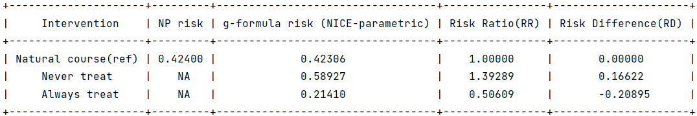
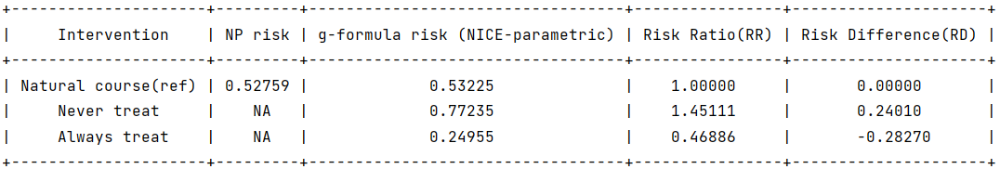

Competing event
In the presence of competing events, users may choose whether to treat competing events as censoring events. When competing events are treated as censoring events, risks under different interventions are calculated under elimination of competing events, and are obtained by the Kaplan–Meier estimator. When competing events are not treated as censoring events, risks under different interventions are calculated without elimination of competing events, and are obtained by using an estimate of the subdistribution cumulative incidence function 1 , 2.
The arguments for competing events:
Arguments |
Description |
|---|---|
compevent_name |
(Optional) A string specifying the name of the competing event variable in obs_data. Only applicable for survival outcomes. |
compevent_model |
(Optional) A string specifying the model statement for the competing event variable. Only applicable for survival outcomes. |
compevent_cens |
(Optional) A boolean value indicating whether to treat competing events as censoring events. Default is False. |
Sample syntax:
compevent_name = 'D'
compevent_model = 'D ~ A + L1 + L2 + L3 + t0'
compevent_cens = False
g = ParametricGformula(..., compevent_name = compevent_name, compevent_model = compevent_model, compevent_cens = compevent_cens, ...)
The name of competing event in the input data should be specified in the argument ‘‘compevent_name’’. The model statement for the competing event variable should be specified in the argument ‘‘compevent_model’’. Users should also specify the argument ‘‘compevent_cens’’ as True or False indicating whether they want to treat the competing event as censoring event (the default is False).
Setting ‘‘compevent_cens’’ as default (False):
Running example [code]:
import pygformula
from pygformula import ParametricGformula
from pygformula.parametric_gformula.interventions import static
from pygformula.data import load_basicdata
obs_data = load_basicdata()
covnames = ['L1', 'L2', 'A']
covtypes = ['binary', 'bounded normal', 'binary']
covmodels = ['L1 ~ lag1_A + lag2_A + lag_cumavg1_L1 + lag_cumavg1_L2 + L3 + t0',
'L2 ~ lag1_A + L1 + lag_cumavg1_L1 + lag_cumavg1_L2 + L3 + t0',
'A ~ lag1_A + L1 + L2 +lag_cumavg1_L1 + lag_cumavg1_L2 + L3 + t0']
ymodel = 'Y ~ A + L1 + L2 + L3 + lag1_A + lag1_L1 + lag1_L2'
time_name = 't0'
id = 'id'
outcome_name = 'Y'
basecovs = ['L3']
compevent_name = 'D'
compevent_model = 'D ~ A + L1 + L2 + L3 + t0'
time_points = np.max(np.unique(obs_data[time_name])) + 1
int_descript = ['Never treat', 'Always treat']
g = ParametricGformula(obs_data = obs_data, id = id, time_points = time_points,
time_name=time_name, int_descript = int_descript,
Intervention1_A = [static, np.zeros(time_points)],
Intervention2_A = [static, np.ones(time_points)],
basecovs =basecovs, covnames=covnames,
covtypes=covtypes, covmodels=covmodels,
compevent_name = compevent_name, compevent_model=compevent_model,
outcome_name=outcome_name, outcome_type='survival', ymodel=ymodel)
g.fit()
Output:

Setting ‘‘compevent_cens’’ as True:
compevent_name = 'D'
compevent_model = 'D ~ A + L1 + L2 + L3 + t0'
compevent_cens = True
g = ParametricGformula(..., compevent_name = compevent_name, compevent_model = compevent_model, compevent_cens = compevent_cens, ...)
Output:

- 1
Young JG, Stensrud MJ, Tchetgen Tchetgen EJ, Hernán MA. A causal framework for classical statistical estimands in failure-time settings with competing events. Statistics in Medicine. 2020;39:1199-236.
- 2
Fine JP and Gray RJ. A proportional hazards model for the subdistribution of a competing risk. Journal of the American Statistical Association, 94(446):496–509, 1999.